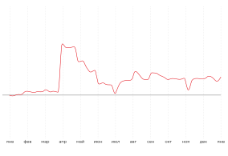
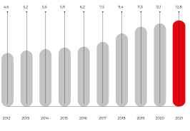
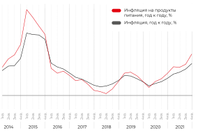

Динамика реального ВВП России
В 2021 г. ВВП вырос на 4,7% по сравнению с предыдущим годом, что обусловлено постепенным восстановлением экономической активности на фоне реализации соответствующего национального плана и снятия эпидемиологических ограничений.
Реальные располагаемые доходы населения
Кроме того, крайне благоприятным для розничной торговли фактором стало усиление инфляции в сочетании с существенным увеличением реальных располагаемых доходов населения после выхода россиян на работу.
После резкого увеличения потребительских расходов во II квартале 2021 г. темпы роста выручки в сфере розничной торговли и торговли продовольственными товарами в последующих кварталах снизились. Для стимулирования восстановления экономики правительство объявило о мерах дополнительной финансовой поддержки для малого бизнеса, семей и социально незащищенных категорий населения.
Меры поддержки населения
Единовременные выплаты пенсионерам и ученикам начальной и средней школы в размере 10 тыс. руб., а также выплаты бывшим военнослужащим в размере 15 тыс. руб. Кроме того, ежемесячное пособие неполным семьям на детей в возрасте от 8 до 16 лет включительно составило в среднем 5 650 руб.
С учетом того, что семьи с низким уровнем дохода обычно тратят около 40% своего дохода на продукты питания, предполагается, что указанная дополнительная помощь будет использована на покупку продовольствия.
По данным «Сбербанк КИБ», в 2021–2024 гг. правительство планирует дополнительно выделить 500 млрд руб. на социальные нужды, строительство и меры государственного контроля в сфере экологии, цифровизации и развития клиентоориентированности. Это стало возможным благодаря росту экономики и увеличению бюджетных поступлений от несырьевого сектора.
Заработная плата
В 2021 г. минимальная месячная заработная плата в России выросла на 5,5% до 12 792 руб.В Москве и Санкт-Петербурге ее размер составил 20 589 руб. и 19 тыс. руб. соответственно.
Рост потребительских цен
В 2021 г. индекс потребительских цен вырос на 6,7%, а индекс потребительских цен на продукты питания поднялся на 8,4%. Наиболее значительный рост наблюдался в таких категориях, как плодоовощная продукция и яйца. Рост цен на продовольственные товары привел к увеличению соответствующих расходов на 2,4%, что вызвало повышенную обеспокоенность среди потребителей.
Рост потребительских цен с учетом сезонных колебаний достиг шестилетнего максимума в октябре и ноябре. Инфляционные ожидания домохозяйств выросли в декабре до нового пятилетнего максимума. Ценовые ожидания предприятий также были близки к многолетним максимумам.